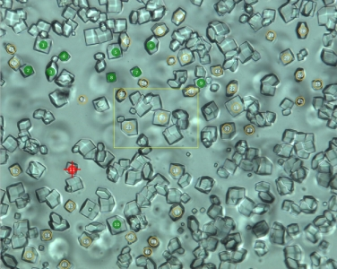
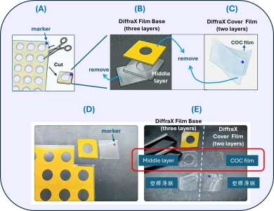
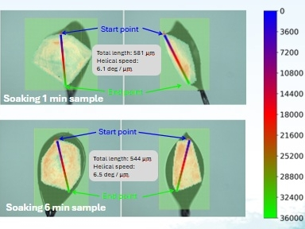
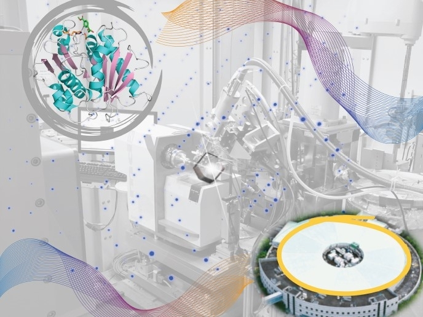

DiffraX Plates for Room-temperature
TPS 07A室溫原位多晶序列數據收集使用手冊
Room-temperature In Situ Serial Data Collection at TPS 07A

DiffraX Plates for Room-temperature
DiffraX Plates非原位室溫數據收集使用手冊
Ex Situ Use of DiffraX Plates for Room-temperature Data Collection

2025 AsCA
Micro-beam Helical Scanning Combined with Intensity-based Hierarchical Clustering for Resolving Intra-crystal Heterogeneity

2025 NSRRC Users' Meeting
Biopharmaceutical Beamline TLS 15A1 for MacromolecularCrystallography at NSRRC